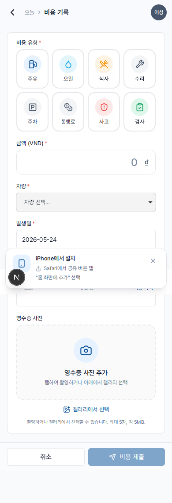
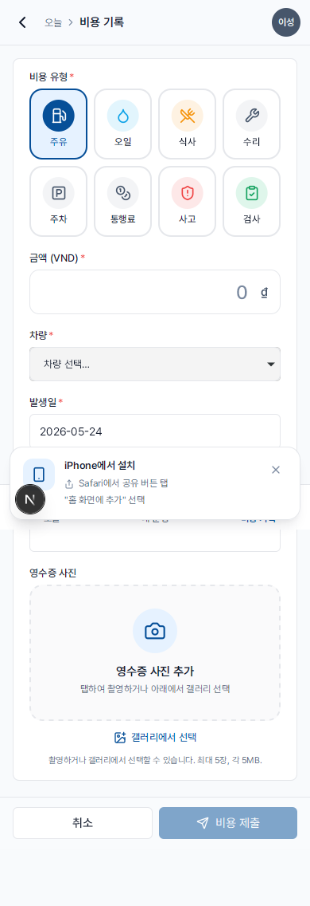
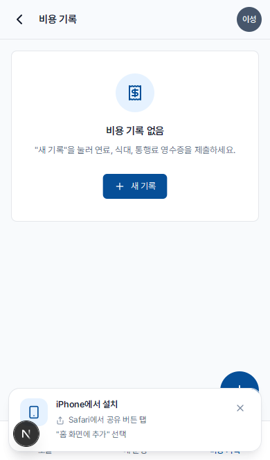

발생 비용 기록
한국어 번역 진행 중 — 이 페이지의 본문 일부는 아직 베트남어입니다. 제목·사이드바·이미지는 한국어로 제공되며, 본문 번역은 점진적으로 업데이트됩니다. 급한 경우 베트남어 원문을 참고하세요.
- 시기
- Ngay sau khi chi tiêu (trong vòng 7 ngày)
- 준비물
- Ảnh hoá đơn (chụp bằng camera trong app)
- 승인
- Tùy loại: tự động duyệt nếu dưới ngưỡng, ngược lại Admin duyệt tay
8 loại chi phí
| Loại | Ví dụ | Có cần Admin duyệt? |
|---|---|---|
| 🔵 Xăng (FUEL) | Đổ xăng đầy bình | Tự động duyệt |
| 🔵 Dầu (OIL) | 오일 교환 định kỳ | Tự động duyệt |
| 🟡 Ăn uống (MEAL) | Cơm ca chiều | Tự duyệt; 알림 nếu > 500K |
| ⚪ Sửa chữa (REPAIR) | Thay lốp, sửa điện | Admin duyệt nếu ≥ 1.000.000₫; ngược lại tự duyệt |
| ⚪ Đỗ xe (PARKING) | Phí gửi xe ở Vincom | Tự động duyệt |
| ⚪ Phí đường (TOLL) | BOT cao tốc | Tự động duyệt |
| 🔴 Tai nạn (ACCIDENT) | Va quệt nhẹ phải sơn lại | Bắt buộc Admin duyệt + bắt buộc ảnh |
| 🟢 정기검사 (INSPECTION) | Phí 정기검사 định kỳ | Tự động duyệt |
Cách ghi chi phí
Mở tab Chi phí ở thanh điều hướng đáy. Bấm nút "+" tròn ở góc dưới phải.
Chọn Loại chi phí bằng cách bấm vào một trong 8 ô icon (radio grid). Chỉ chọn được 1 loại.

Nhập số tiền (đơn vị VND, không cần gõ dấu phân cách — hệ thống tự định dạng).

Chọn Ngày chi tiêu (mặc định là hôm nay, có thể chọn lùi tối đa 7 ngày).
Bấm "Chọn xe" để chọn xe liên quan (51K-238.91, …). Nếu đang trong 운행 → tự gắn vào 운행 đó.
Bấm "📷 Chụp / chọn ảnh" — chụp hoá đơn hoặc chọn ảnh từ thư viện. Hỗ trợ tối đa 5 ảnh, mỗi ảnh ≤ 5MB (PNG/JPG/GIF/WebP).
(Tùy chọn) Nhập 메모 nếu cần giải thích thêm (ví dụ: "Hết xăng giữa đường, đổ tạm 200k").
Bấm "Ghi nhận". Hệ thống upload ảnh, lưu DB. Khi xong sẽ hiện ✓ "Đã ghi nhận".
Xem lại chi phí đã nộp

Tab Chi phí hiển thị toàn bộ chi phí của riêng bạn (không thấy của đồng nghiệp). Mỗi dòng có:
- Loại + icon
- Số tiền (VND)
- Ngày + mã 운행 (nếu gắn)
- Nhãn trạng thái:
- Chờ duyệt — đang chờ Admin
- Đã duyệt — Admin đã chấp nhận
- Tự duyệt — qua ngưỡng tự động
- Bị từ chối — bấm xem để biết lý do
Sau 7 ngày từ lúc nộp, bản ghi tự khóa. Bạn không tự sửa được nữa — phải nhờ Admin. Hãy ghi đầy đủ và chính xác ngay từ đầu.